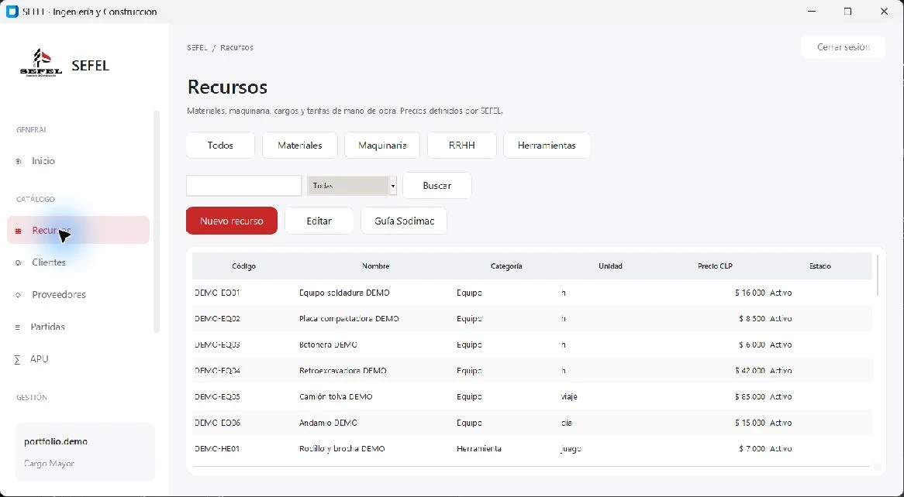
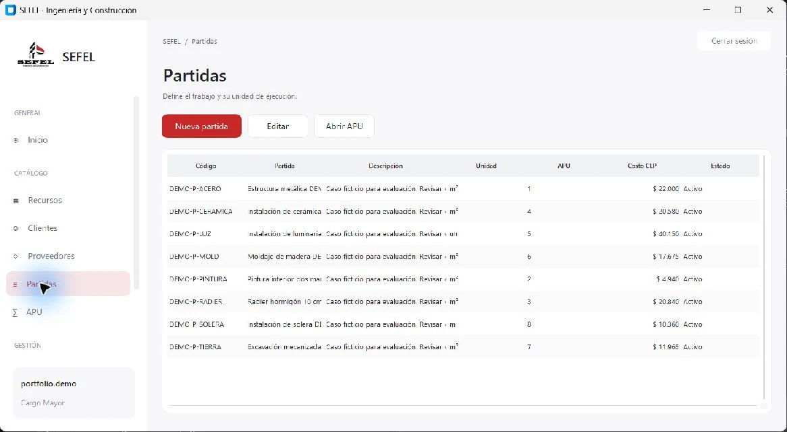
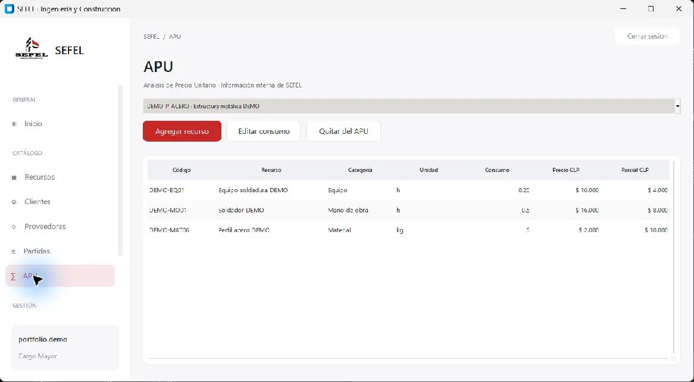
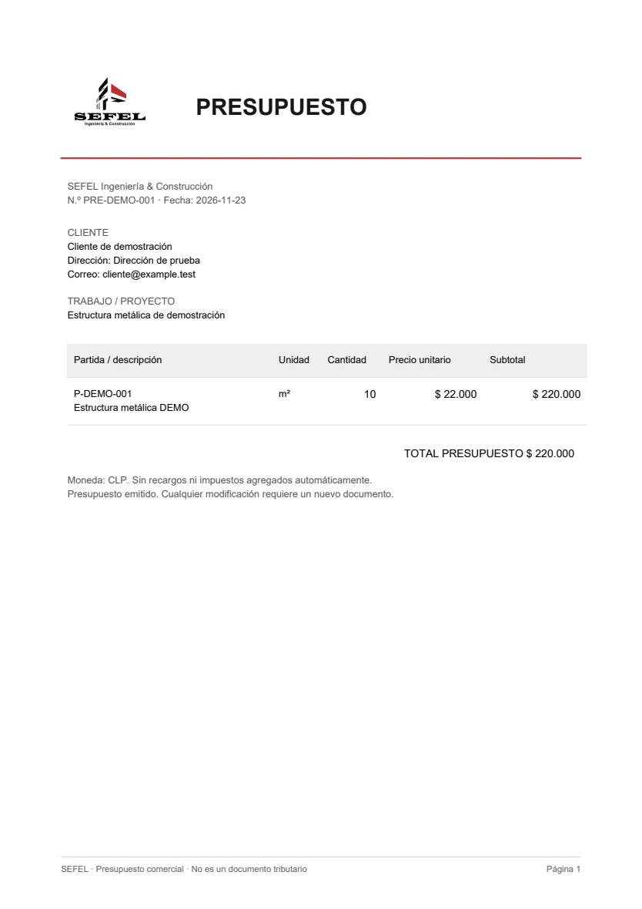

Contexto y objetivos
El proyecto integrado aborda una dificultad de la gestión de presupuestos: que los recursos, la composición de costos y el documento final mantengan una relación clara. Una partida reúne materiales, equipos y mano de obra; el presupuesto utiliza esas partidas para expresar cantidades e importes. El prototipo permite estudiar ese recorrido completo dentro de una aplicación de escritorio.
Arquitectura y separación de responsabilidades
La interfaz se implementa con CustomTkinter. El núcleo de dominio organiza operaciones, validaciones y persistencia; un módulo de documentos produce los reportes con ReportLab. SQLite permite ejecutar el prototipo localmente. Existen adaptadores y componentes para una API FastAPI y almacenamiento central, cuyo despliegue multiequipo requiere una comprobación específica.
El desafío: conservar lo que se emitió
Un documento comercial emitido debe conservar sus importes aunque después cambie el catálogo. Por eso la lógica distingue los datos actuales del recurso de la información utilizada al emitir un presupuesto. El trabajo con Decimal evita depender de aproximaciones binarias para los cálculos monetarios. La regla del proyecto no agrega automáticamente un recargo del 20 %.
Seguimiento interno y permisos
El control por proyecto relaciona un presupuesto destinado con costos reales y saldo. Un saldo negativo expresa sobrecosto; no se presenta como un cálculo de rentabilidad. La implementación contiene roles y registro de acciones. La interfaz, la emisión y el seguimiento interno cumplen responsabilidades diferentes: el seguimiento no reescribe el PDF que ya se entregó.
Participación, evolución y evidencia
Se presenta como proyecto académico integrado desarrollado con apoyo de IA. La contribución individual todavía requiere un desglose acordado con el equipo. La evidencia revisada incluye código, versiones ejecutables, pruebas de dominio y documentos de demostración. No se atribuye una operación empresarial real a partir de estas entregas. La galería incluye cuatro capturas reales de la aplicación sobre una base aislada con datos ficticios y un documento generado. El recorrido visual comprueba la apertura y navegación de esas vistas; no reemplaza una validación completa del flujo de emisión o de un despliegue central.
Arquitectura del proyecto
Esquema de responsabilidades. La descripción técnica distingue los componentes y su función.
Evidencias visuales









Selecciona una imagen para ampliarla. Capturas originales a color; consulta los enlaces oficiales para explorar cada proyecto.